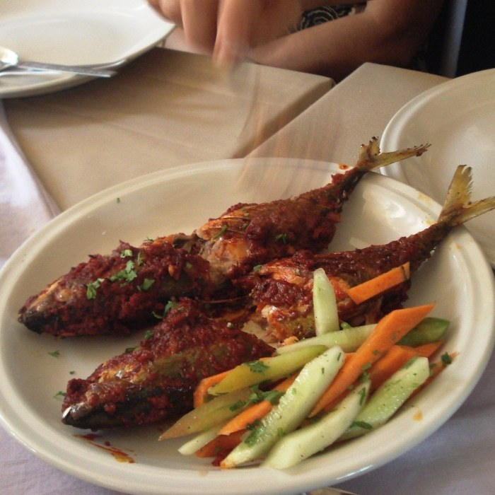
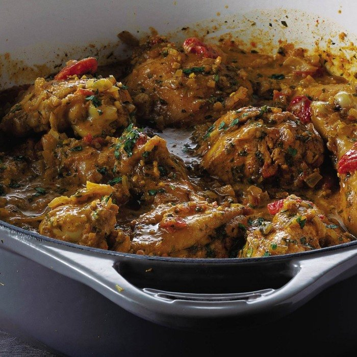

Popular Recipes

Chicken Handi
Ingredients
Chicken - 1.2 kg
Onion - 5 thinly sliced
Tomatoes - 2 finely chopped
Garlic - 8 cloves chopped
Ginger paste - 1 tbsp
Vegetable oil - ¼ cup
Cumin seeds - 2 tsp
Coriander seeds - 3 tsp
Turmeric powder - 1 tsp
Chilli powder - 1 tsp
Green chilli - 2
Yogurt - 1 cup
Cream - ¾ cup
fenugreek - 3 tsp Dried
Garam masala - 1 tsp
Salt - To taste

Tandoori Chicken
Ingredients
lemons - 2 Juice
paprika - 4 tsp
red onions - 2 finely chopped
chicken thighs - 16 skinnless
vegetable oil - For brushing
Greek yogurt - 300ml
ginger - large piece
garlic clove - 4
garam masala - ¾ tsp
ground cumin - ¾ tsp
chilli powder - ½ tsp
turmeric - ¼ tsp

Lamb Biryani
Ingredients
Cashew nuts - 12
Khus khus - ½ tbsp
Cumin seeds - ½ tbsp
Onions - 3 sliced thinly
Ginger garlic paste - 2 tsp
Garlic - 4 whole
Mint - Leaves
Cilantro - Leaves
Saffron - ½ tsp dissolved in ½ cup warm milk
Ghee - 2 tbsp
Basmati rice - 2 Cups
Full fat yogurt - ½ cup
Cumin Seeds - 1 tbsp
Bay leaf - ½
Cinnamon - 1 thin piece
Cloves - 3
Cardamom - 2
Lamb - 1 lb
Red Chilli powder - 1 tsp
Biryani masala - 1 tbsp

Matar Paneer
Ingredients
Sunflower Oil - 1 tbls
Paneer - 225g
Ginger - 2
Cumin - 1 tsp
Turmeric - 1 tsp
Coriander - 1 tsp
Green Chilli - 1
Tomato - 4 large
Peas - 150g
Garam Masala - 1 tsp
Coriander - Small bunch
Naan Bread - to serve

Mackerel - 4
Recheado Masala Fish
Ingredients
Mackerel - 4
Red Chili - 18 dried
Ginger - 1 inch
Garlic - 8 cloves
Pepper - 1.5 tsp
Cumin - 1 tsp
Turmeric - ½ tsp
Cinnamon stick - 1
Clove - 4
Cardamom - 2
Sugar - 1 tbsp
Tamarind ball - 2 marble sized
Vinegar - 2.5 tbsp
Oil - for frying

Red Chilli - 1 large